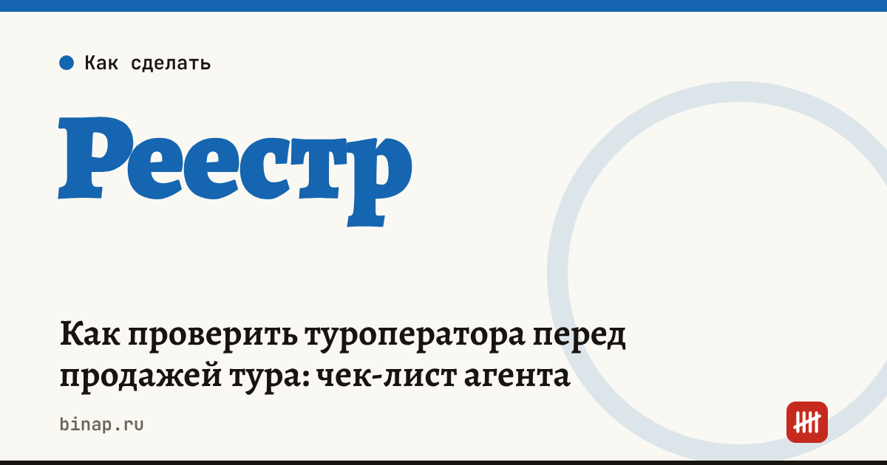

Как проверить туроператора перед продажей тура: чек-лист агента

Если туроператор не выполнит обязательства, турист придёт к агентству — с претензией и репутационными потерями. Поэтому перед продажей нужно убедиться, что оператор есть в едином федеральном реестре туроператоров, что у него действует финансовое обеспечение, и посмотреть его суды, долги и отзывы. На это хватает 15 минут.
Коротко
- Продавать можно только туры операторов из единого федерального реестра туроператоров.
- У туроператора должно быть финансовое обеспечение ответственности; для выездного туризма — ещё и взносы в фонд персональной ответственности.
- Суды и исполнительные производства показывают, как оператор рассчитывается с туристами и партнёрами.
- Договор с туроператором — агентский: в нём должно быть указано вознаграждение и ответственность сторон.
- Сохраняйте результаты проверки — это аргумент в споре с туристом.
Сроки, изменения и разборы для ИП и самозанятых — каждое утро в Telegram и MAX. Подпишитесь, чтобы не пропустить.
Чек-лист проверки
| № | Что проверить | Где смотреть | Тревожный знак |
|---|---|---|---|
| 1 | Реестровый номер оператора | единый федеральный реестр туроператоров | оператора нет в реестре или номер не совпадает |
| 2 | Финансовое обеспечение | сведения в реестре | срок обеспечения истекает или сумма мала |
| 3 | Фонд персональной ответственности (выездной туризм) | сведения в реестре и на сайте объединения туроператоров | нет сведений о взносах |
| 4 | Юрлицо: возраст, руководитель | выписка из ЕГРЮЛ | недавняя смена директора и адреса |
| 5 | Суды | картотека арбитражных дел, суды общей юрисдикции | много исков от туристов и агентов |
| 6 | Долги | банк данных ФССП | крупные исполнительные производства |
| 7 | Отзывы агентов | профессиональные чаты и форумы | задержки выплат вознаграждения |
| 8 | Агентский договор | проект договора | нет условия о вознаграждении и сроках перечисления денег |
Как фиксировать проверку
Сделайте скриншоты реестра и выписки с датой и приложите их к делу клиента. Это показывает, что вы действовали добросовестно. Агентские договоры храните вместе с отчётами агента — они же нужны для учёта вознаграждения на УСН.
Как часто перепроверять
- Перед началом работы с новым оператором — полная проверка.
- Раз в квартал — реестр и финансовое обеспечение по основным операторам.
- При тревожных новостях о задержках — сразу.
Как проверить любую компанию по открытым данным — проверка контрагента. Сколько зарабатывает агентство после эквайринга и налога — калькулятор дохода турагентства. Все шаги — в разделе «Турагентствам».
Частые вопросы
Что будет, если продать тур оператора не из реестра? Турист останется без защиты финансового обеспечения, а претензии придут к агентству. Продавать такие туры нельзя.
Достаточно ли проверить оператора один раз? Нет: финансовое обеспечение имеет срок, а положение компании меняется. Перепроверяйте основных операторов регулярно.
Кто отвечает перед туристом — агент или оператор? Ответственность распределяется по закону и договору. За услуги, входящие в тур, обычно отвечает туроператор, за свои действия — агент. Детали смотрите в агентском договоре.